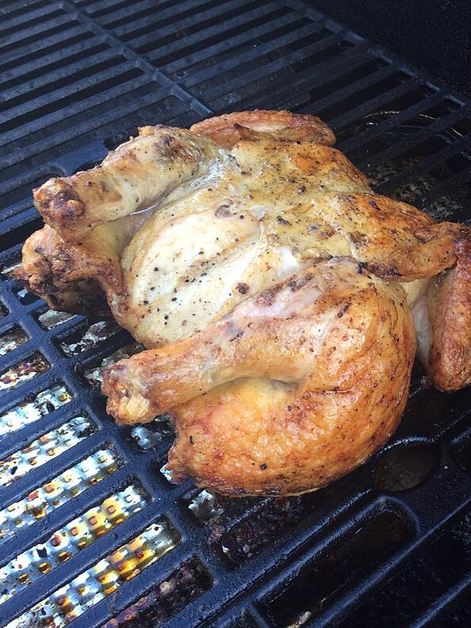

Spatchcocking makes for a bird with super crisp skin and moist meat, in about half the time it takes to roast a whole bird.
To spatchcock a chicken you need to remove the backbone of the chicken and spread it open like a book. This method for grilling a whole chicken lets the interior heat up faster and more evenly than the traditional method for a whole bird. Use your favorite rub and sauce, if you like.
Ingredients
- ¼ cup kosher salt
- water
- 1 (4 pound) whole chicken
- 2 teaspoons smoked paprika
- 2 teaspoons garlic powder
- ½ teaspoon cumin
- ½ teaspoon ground black pepper
- ¼ cup barbecue sauce, or to taste (Optional)
Directions
- Place salt in a large bowl or Dutch oven and add a little water. Stir until salt is dissolved. Unwrap the chicken and place in the salt water brine. Add enough water to cover the bird and refrigerate up to 4 hours.
- Remove chicken from the water, drain, and pat dry with paper towels. Place the chicken breast-side down on a clean cutting board.
- Cut along both sides of the backbone of the chicken with kitchen shears. Remove bone and reserve for another use or discard. With the skin-side down, cut down into the breast bone and a bit of the cartilage above the bone about 1/4-inch deep using the tip of a sharp knife. Turn the chicken skin-side up.
- Place the heel of one hand on top of the other wrist, and using the heel of the hand, press down on the center of the breast, above the area of the cut, to flatten the center and achieve a more uniform thickness of the chicken.
- Combine smoked paprika, garlic powder, cumin, and pepper in a small bowl. Rub spice mix onto both sides of the chicken, gently lifting the skin wherever possible to place some of the rub directly onto the meat. Refrigerate seasoned chicken uncovered for at least 2 hours.
- Remove chicken from the refrigerator 10 to 15 minutes before grilling so it can come to room temperature.
- Preheat an outdoor grill for medium heat to about 375 degrees F (190 degrees C). Lightly oil the grate.
- Place chicken bone-side down onto the preheated grill and cook for 50 to 60 minutes. An instant-read thermometer inserted near the bone should read 150 degrees F (65 degrees C). Flip the chicken skin-side up and brush with barbecue sauce. Continue grilling until chicken is no longer pink at the bone and the juices run clear, about 20 more minutes. An instant-read thermometer inserted near the bone should read 165 degrees F (74 degrees C).
- Remove to a platter, tent with foil, and allow chicken to rest, about 10 minutes. Cut chicken into 6 servings and serve with additional barbecue sauce, if desired.
Nutrition Facts
Per Serving:345 calories; protein 49.5g; carbohydrates 5.1g; fat 12.8g; cholesterol 151.4mg; sodium 4060.4mg.
Return to top
Return to main page